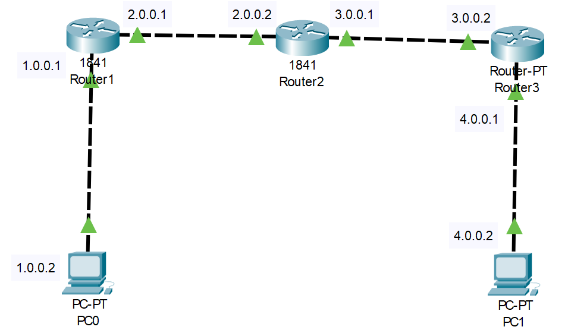

Static Routing
This is a static routing lab in which we will learn how to configure static routing for a network having three routers inside packet tracer.
In this lab there are three 1841 Routers and a total of four network:
-
[1.] 1.0.0.0/8
-
[2.] 2.0.0.0/8
-
[3.] 3.0.0.0/8
-
[4.] 4.0.0.0/8
Figure 1 illustrates how the setup should look.

Figure 1: Static Routing
Download the Static_Routing_1.pkt file for the following steps.
Remember to use the ? if you are unsure on what to do next or how each command, argument and keyword works.
Step 1 - CONFIGURATION ON ROUTER R1
We are going to assign ip address on interfaces of router R1.
Router>enable
Router# config terminal
Enter configuration commands, one per line. End with CNTL/Z.
Router(config)# int fa0/0
Router(config-if)# ip address 1.0.0.1 255.0.0.0
Router(config-if)# no shut
Router(config-if)# exit
Router(config)# int fa0/1
Router(config-if)# ip address 2.0.0.1 255.0.0.0
Router(config-if)# no shut
Step 2 - CONFIGURE STATIC ROUTING ON ROUTER R1
Router>exit
Router#config terminal
Enter configuration commands, one per line. End with CNTL/Z.
Router(config)#ip route 3.0.0.0 255.0.0.0 2.0.0.2
Router(config)#ip route 4.0.0.0 255.0.0.0 2.0.0.2
Step 3 - CONFIGURATION ON ROUTER R2
Router>exit
Router#config terminal
Enter configuration commands, one per line. End with CNTL/Z.
Router(config)#int fa0/0
Router(config-if)#ip address 2.0.0.2 255.0.0.0
Router(config-if)#no shut
Router(config-if)#exit
Router(config)#int fa0/1
Router(config-if)#ip address 3.0.0.1 255.0.0.0
Router(config-if)#no shut
Step 4 - CONFIGURE STATIC ROUTING ON ROUTER R2
Router>enable
Router#config terminal
Enter configuration commands, one per line. End with CNTL/Z.
Router(config)#ip route 1.0.0.0 255.0.0.0 2.0.0.1
Router(config)#ip route 4.0.0.0 255.0.0.0 3.0.0.2
Step 5 - CONFIGURATION ON ROUTER R3
Router>enable
Router#config terminal
Enter configuration commands, one per line. End with CNTL/Z.
Router(config)#int fa0/1
Router(config-if)#ip address 3.0.0.2 255.0.0.0
Router(config-if)#no shut
Router(config-if)#exit
Router(config)#int fa0/0
Router(config-if)#ip address 4.0.0.1 255.0.0.0
Router(config-if)#no shut
Step 6 - CONFIGURE STATIC ROUTING ON ROUTER R3
Router>exit
Router#config terminal
Enter configuration commands, one per line. End with CNTL/Z.
Router(config)#ip route 2.0.0.0 255.0.0.0 3.0.0.1
Router(config)#ip route 1.0.0.0 255.0.0.0 3.0.0.1
Step 7 – PING and TRACERT PC0 TO PC1
Step 8 – EXPAND NETWORK
Add another PC off of Router 2 in the Figure 1 and put it on network 5.0.0.0
Make it so that only PC on 4.0.0.2 can communication with the new PC on 5.0.0.0, remember this will be two way communication. There should be no route to 1.0.0.# through 2.0.0.#.
Step 9 – EXPAND NETWORK AGAIN
Add another Router and PC with a network of 6.0.0.0 off Router 3 and make it so that this new Router 4 allows communication between 1.0.0.# and 6.0.0.# only. No other PC can communicate to 6.0.0.0.
Question is this possible?
Question is this possible?
You can download the solution here: Static_Routing_2.pkt